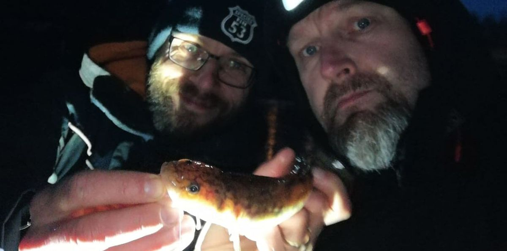
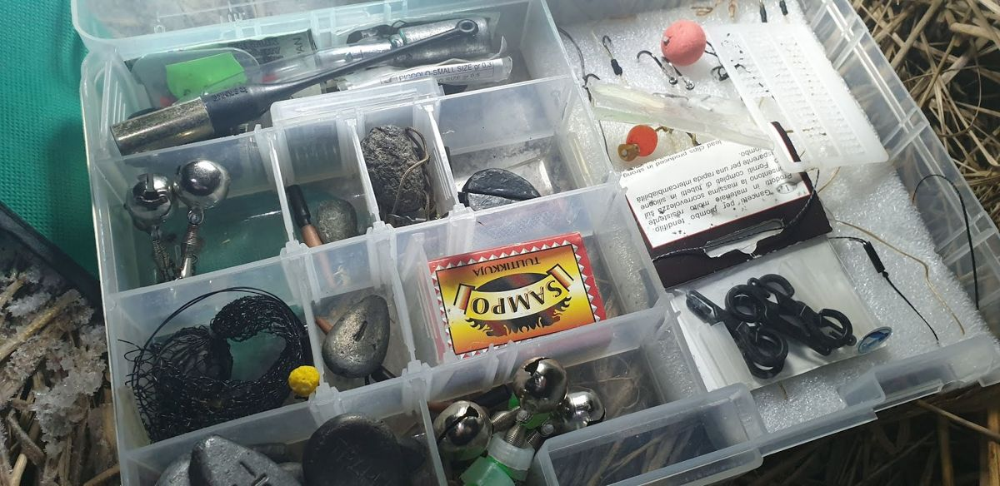
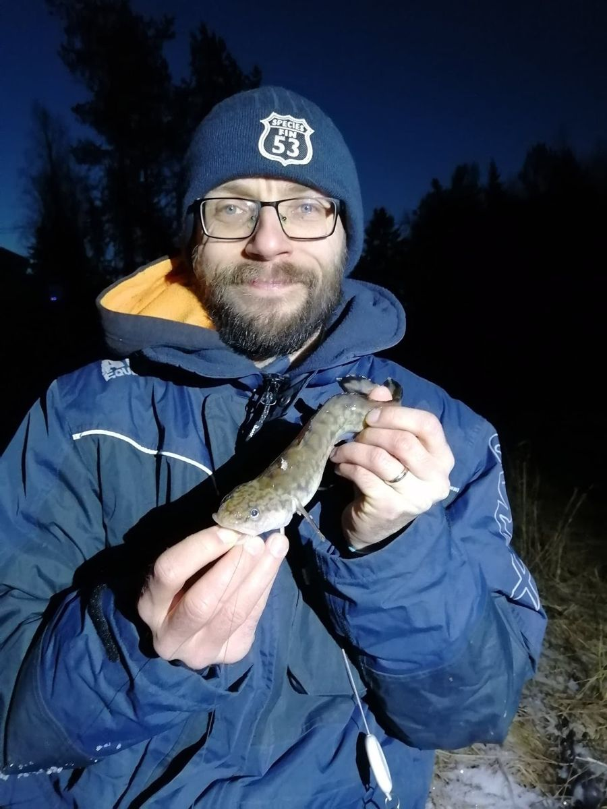
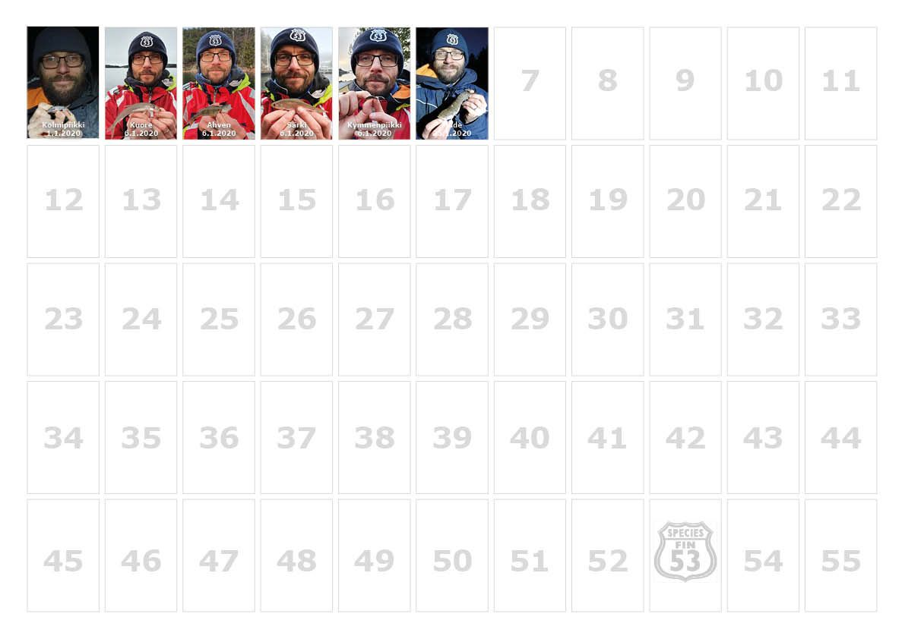

Blogitekstit · Tammikuu 2020
Madejahdissa alla tähtitaivaan
Kaupallinen yhteistyö Paitakulman kanssa.


Herätyskellon soitto kuuluisi reilun tunnin päästä, ajattelen mielessäni. Mitä sitä turhaan pyörimään sängyssä, kun kalareissu on edessä. Aamupala naamaan, kahvia kupillinen ja toinen kupponen termariin. Nemo odottaa jo malttamattomana eteisessä lähtöä.
Ajellemme Nemon kanssa halki hiljaisen Sipoon ja Laukkosken päästen pelipaikalle hieman ennen aamu kuutta.
Kamat kantoon ja joen penkalle. Olen virittänyt pohjaonget melkein valmiiksi vapalaukkuun käyttäen hyödyksi karpinonginnassa tutuksi tullutta rigin osaa nimeltä: Safety Lead Clip.
Puntti kiinni muoviklipsiin, lukitsija paikalle ja tapsikukkarosta valmis koukkutapsi leikarista kiinni lukkoleikariin. Syötiksi koukkuun silakan pyrstö ja pyyntiin. Muutama minuutti ja vapa on pyynnissä.


Kaksi vapaa vien aukean vasempaan reunaan hälyttämien päälle ja kaksi vapaa eteeni leiripaikan kohdalle kilikelloilla viritettynä. Ennen edellistä madereissua Mustijoelle järjesti Osku Kuusela minulle monivapaluvan.
Makoilen makuualustalla tuijottaen pilvetöntä tähtitaivasta, suoraan ylläni on Otavan tähtikuvio ja sadat muut tähdet.Maaseudun vähäinen valosaaste luo ainutlaatuisen mahdollisuuden ihailla ääretöntä maailmankaikkeuttamme.
Kerran häläri piippaa tärpin merkiksi ennen Oskun paikalle saapumista. Tämän jälkeen "tärppejä" aiheuttaa vain virran mukaan irronneet jäälautat.
Osku toi mukanaan lupaamansa aamukahvit ja yllätykseksi myös pussillisen kroisantteja. Kuppi jos toinenkin tuli nautittua rupattelun lomassa, kerran kahvihetken keskeytti pidempi piippaus jonka lopulta taisi aiheuttaa jääkautta.


Kellon lähestyessä kahdeksaa ajattelin, että siirrän kaksi hälärivapaa myös lähemmäksi leirikohtaa. Toista seteistä ylös kelatessani tunsin, että nyt jäi pohjaan koko systeemi.
Tempaisin kovempaa ja lopulta puntti irtosi pohjasta. Kelatessani painoa kohti jäänreunaa, huomasin siiman päässä jotain valkoista.'
Made! Huusin Oskulle.
Iloisena onnistumisesta pompin Oskun luokse kuvattavaksi kuin aropupu konsanaan.
Retken onnistumisintoa lisäsi se, että Osku oli mukana. Yksin tämä olisi ollut vain laji muiden joukossa, nyt sain jakaa saantihetken uuden kalakaveri kanssa.
Henkisesti myös tiimikaverini Timi oli mukana, olivathan syöttisilakat häneltä edellisellä reissulla saatuja.
Olen nyt jokaisen kalaretken päätteeksi huoltanut välineet ja järjestänyt ne kalakaappiini odottamaan seuraavaa reissua. Kelat irti vavoista, siimoista pätkät pois.
Onko seuraava reissu vasta muikku-ankeriasretki Kokkolan kautta Lapinlahdelle, vai tuleeko sitä käytyä kalassa jossain ennen sitä.
LPR nyt 0,83 ja kalastustunteja kasassa tammikuussa vajaat 32.


Seuraa ennätyksen etenemistä
Pidän kirjaa lajilistasta ja tarkemmasta retkidatasta Google -taulukossa, joka löytyy jokaisesta ennätysyrityksen postauksesta. Tästä linkistä taulukko avautuu uuteen ikkunaan.
Seurantatilanne löytyy myös blogini oikeasta yläreunasta.
Vuoden aikana ennätysyrityksessä kulkee mukaan myös tämä kalataitelija-graaffikko Sakke Yrjölän suunnittelema SPECIES FIN 53 -merkki.
Paitakulmassa painatin pipoon ja lippikseen saman merkin. Tavoitteeni on saada aikaiseksi 53 saaliskuvaa tekstin alussa tekemääni taulukkoon joissa kaikissa kuvissa näkyisi tuo kyseinen tunnus.
Paitakulma on Suomalainen perheyritys, joka haluaa panostaa laatuun ja asiakastyytyväisyyteen. Tutustu yrityksen palveluihin tästä.
2020 made Mustijoki pohjaonki Pornaisten nuorten kalastusseura ry SpeciesFIN53